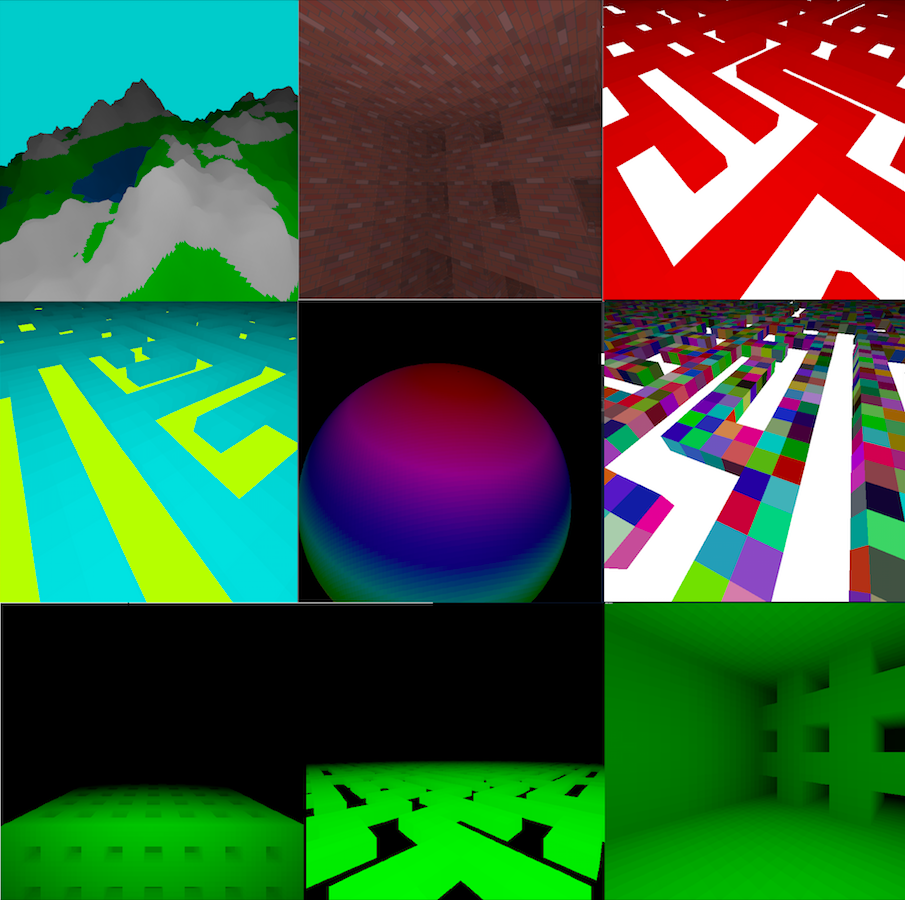

3D Engine

This 3D engine, developed using pure java without 3rd party libraries, coincidentally served as an interesting way to apply the linear algebra content of my high school's multivariate calculus class. It provides a way to render objects in three dimensional space (with and without textures), as well as a number of different ways of procedurally generating interesting content. Learned how distinct branches of mathematics are unique ways of saying the same thing, including the connections between matrix multiplication and the multiplication of four-dimensional hyper-complex numbers known as quaternions.